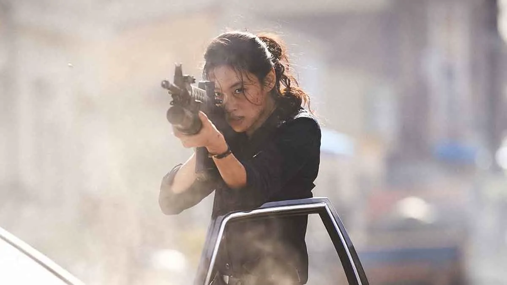
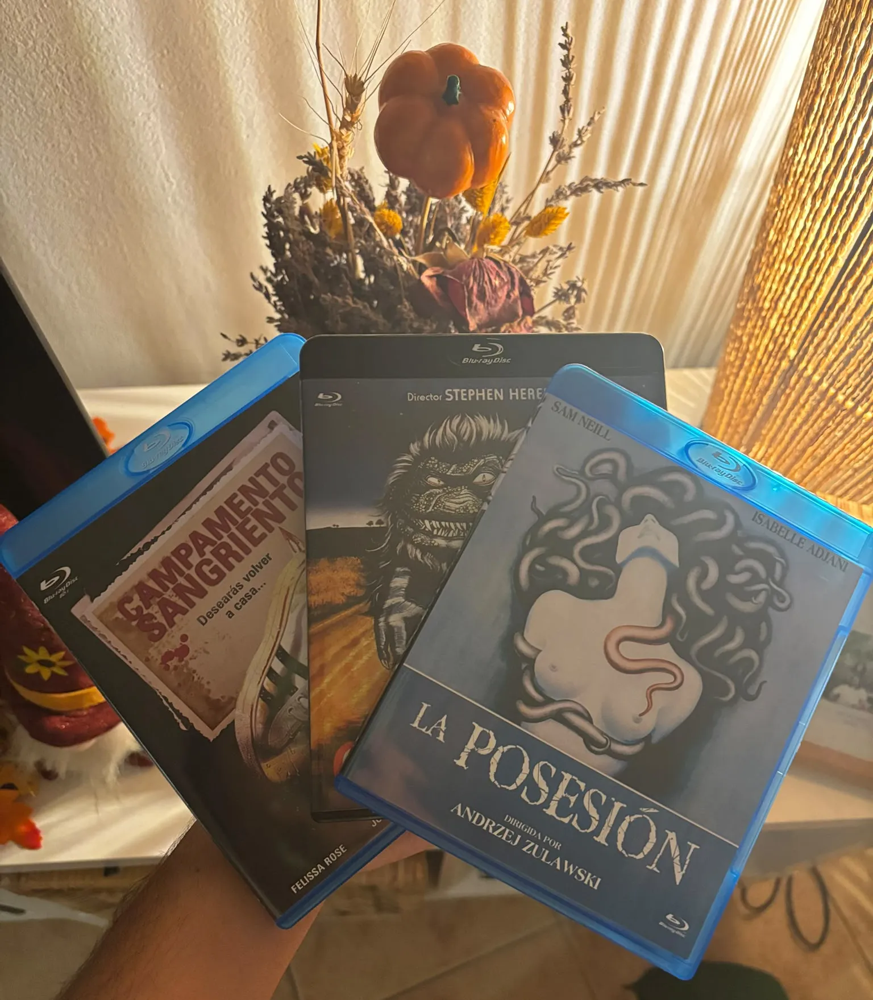
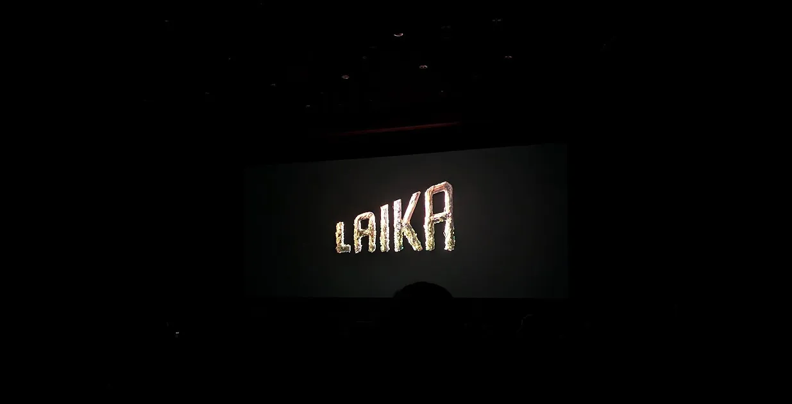

Sitges 2026 día 4 y 5 - Hope, Wildwood y Bad Lieutenant: Tokio
Ha terminado la 59.ª edición del Festival de Sitges y los hooligans del cine de género estamos de luto hasta el próximo 6 de noviembre, cuando arranque el festival de cine de terror de Molins de Rei, el hermano menor de Sitges, que este año celebra su 45.ª edición.
En la sesión inaugural se proyectará Los que vienen, de Víctor Catalán, junto con un cortometraje de Caye Casas, director de la infame La mesita del comedor (2022).
Hasta entonces, nos queda una buena cartelera para sobrellevar la Spooky Season: La otra madre, ClayFace y Boiúna son solo algunas de las películas que llegan a la gran pantalla este octubre.
En plataformas, por su parte, tenemos Carrie y Crystal Lake, dos propuestas que prometen mantenernos pegados al sofá con nuevas aproximaciones a los clásicos del terror.
Pero vamos al meollo de la cuestión: hoy os cuento cómo fueron mis últimos días en el festival y qué impresiones me he llevado después de estas dos semanas.
Como os conté en entradas anteriores, conseguir entradas para las películas más esperadas de Sitges es cada vez más complicado, así que hay que conformarse con lo que se pueda conseguir. Para poder ver algunas de las películas que tenía fichadas de antemano, he tenido que rebajar el listón con los horarios y optar por algunas sesiones más intempestivas.
Eso me pasó con la coreana Hope, probablemente la película a la que más ganas tenía de hincarle el diente. Y no era para menos: su tráiler me había encandilado meses antes y saber que estaba dirigida por Na Hong-jin, responsable de la genial El extranjero (2016), no hacía más que aumentar mis ganas de verla.

Total, que, al no poder conseguir entrada para la sesión de las 22:45, que me venía de perlas, tuve que conformarme con la de las 08:15. Así que tocó pegarse el madrugón para poder ir a verla.
¿Valió la pena?
Sí, pero con matices. La película arranca bien. Durante la primera hora y media es frenética, arrolladora, adrenalínica y un largo etcétera de adjetivos superlativos. Llena cada segundo de imágenes impactantes y de acción con mayúsculas. Lo hace sin dar demasiadas explicaciones sobre lo que está ocurriendo, lanzándonos de lleno a las trincheras de un pueblo de la Corea rural donde algo está arrasando con todo.
Durante estos minutos iniciales seguimos al protagonista, un policía de pueblo bastante torpe que entiende tan poco de lo que está pasando como nosotros.
En esta primera etapa, la película es divertidísima. Todo vuela por los aires, el protagonista corre de un lado a otro como pollo sin cabeza y en su epopeya, va reclutando a personajes cada vez más carismáticos y peculiares.
El problema llega cuando finalmente nos ponen delante a nuestro némesis y descubrimos que es poco más que un GIF superpuesto al fondo, con unos efectos digitales que no pasan el filtro del público de 2026.
Pero bueno, unos malos efectos digitales tampoco destrozan una película. Al fin y al cabo, el género de terror tiene una larga lista de efectos visuales cutres.
El problema real de la película es su duración: nada más y nada menos que 160 minutos. Y, para mí, le sobran 100.
Pasado ese inicio apoteósico del que os hablaba, la película empieza a dar vueltas y vueltas sobre lo mismo. Y lo peor de todo es que, llegado cierto punto, parece querer insinuarnos una explicación para todo lo que ocurre. Y no entiendo por qué. Me da igual de dónde venga tu monstruo; ese no es el punto.
Pese a todo, me lo pasé bien viéndola. Es una buena monster movie, o una película de kaijus, mejor dicho, que habría sido mucho mejor si alguien le hubiera hecho entrar en razón a su director y le hubiera recomendado contratar a un estudio de efectos especiales más competente.
Al terminar Hope, me fui a casa. No tenía más películas aquel día.
No regresé a Sitges hasta el viernes siguiente, día 16, para ver Wildwood y Bad Lieutenant: Tokio y despedirme del festival.
Tenía entradas para Whalefall y Company el miércoles 14, pero, lamentablemente, no pude ir.
Pero bueno, vamos con lo que sí pude vivir. El viernes fui a Sitges acompañado de un amigo y, como todavía teníamos un buen rato hasta que empezara Wildwood, aprovechamos para dar una vuelta por los puestos de venta. Allí, sin mucha resistencia por mi parte, volví a caer en la trampa del 79 y sus ofertas de 3x2.
Esta vez cayeron La posesión (1981), Critters (1986) y Campamento sangriento (1983). Como siempre, fiel al cine de terror de los 80.

Después nos tomamos una cerveza en una terraza por la que tuve que pedir un crédito bancario. Para recuperarme de semejante agresión a mis finanzas personales, fuimos a buscar la cena: un buen dürüm guarro que recogimos en la otra punta de Sitges y nos comimos en un banco del paseo marítimo. Porque las clases populares también podemos disfrutar de los festivales de cine.
Y supongo que ya es hora de hablar de Wildwood, la nueva película del estudio Laika.

Con Wildwood también tengo una sensación agridulce. Su estética y su animación stop motion son sencillamente de diez. En serio, excelentes en todos los sentidos. Sin embargo, a nivel argumental, y pese a que en muchos momentos la película es un despliegue brutal de imaginación y atmósfera, creo que peca de tener una historia demasiado simple. No aporta nada especialmente nuevo al género fantástico y acaba resultando un refrito de otras obras.
Y la verdad, me da pena, porque la parte visual es tan abrumadoramente buena que me sabe mal no haber podido disfrutar de la película en su conjunto por culpa de una historia que, sencillamente, ya he visto demasiadas veces.
Creo que, con una historia a la altura de su talento, los animadores que han participado en Wildwood podrían hacer una autentica obra maestra, sin lugar a dudas.
Pasamos a la última película, la nueva bizarrada del siempre gamberro Takashi Miike, de la que ya os adelanto que he salido bastante satisfecho.
Se trata de Bad Lieutenant: Tokio, un reboot de Bad Lieutenant (1992), de Abel Ferrara.
No he visto ni la original de Ferrara ni el posterior reboot de Werner Herzog, así que tengo deberes pendientes.
La nueva película del japonés no es perfecta. De hecho, adolece de cierta falta de ritmo y resulta bastante dispersa. Tengo la sensación de que, en el fondo, quería ser dos películas en lugar de una. Pero consiguió sumergirme en el mundo de los yakuza durante los 108 minutos que dura la experiencia y mantenerme interesado en todo momento por el destino de sus personajes. Ahí es nada.
Y lo mejor de todo es que me han entrado unas ganas tremendas de seguir viendo películas de la yakuza y de Miike.
Y eso es todo. Me despido de Sitges con la sensación de que quizá no haya sido la mejor edición de todas. Pero, claro, hay que matizarlo: este año no he podido ver todo lo que quería por falta de entradas y también he dejado algunas películas para el próximo festival de Molins de Rei.
Además, comparar cualquier edición con la de Sitges de 2024, con La sustancia, Terrifier 3 y la para mí sorprendente Beating Hearts, era prácticamente imposible.
EnRoot